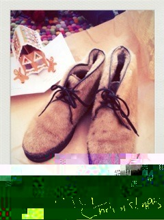
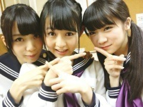
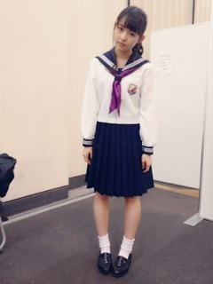

| 2012/12 28 Fri | 328回目*marika |
ブログ更新してなくて
ごめんなさい

ライブ前に送信したはずのが
送信されてなかったあああ

...
サンタさんからいただきました。

さっそく履いてます。
あーたっかい

.........
Zepp Live in Tokyo...
最高だったー！
来てくださったみなさん、
本当にありがとうございました！
＼編み込みヘアー／

私が出演したのは
♪音が出ないギター(昼)
人はなぜ走るのか？(夜)
♪狼に口笛を
♪せっかちなかたつむり
♪春のメロディー
♪涙がまだ悲しみだった頃(昼)
左胸の勇気(夜)
♪心の薬
♪ぐるぐるカーテン
♪おいでシャンプー
♪走れ！Bicycle
アンコール
♪会いたかったかもしれない
♪制服のマネキン
♪乃木坂の詩
です！
今回はオリジナルメンバーだった為
歌ってる曲全部出れたよ

みなさんのパワーのおかげで
大成功に終えることができて
本当よかったです。
＼まいまい、まなつと／

MCではちょっとずつ
2012年を振り返りました。
懐かしかった。
いろいろなことしたんだなあ。。
というかよみうりランドでやった
初の全国握手会...
私、出てなかったんだよおおお


学業で...
なんか、振り返ったら
あー悔しい！初だったもんなあ。
ライブは良いね。
もうね、はしゃぎまくったからね！
本当楽しかった♪♪
家に帰ったらソファーに
ばたんきゅーしてしまってね！
そのまま寝てました笑
...
今年ももうちょいで
終わっちゃうのね...

掃除して、気持ちよく
来年を迎えたいです。
リクエスト6
セーラー服全身

このスカート丈がよい！
まりか
コメント(252)
2012/12/28 15:36